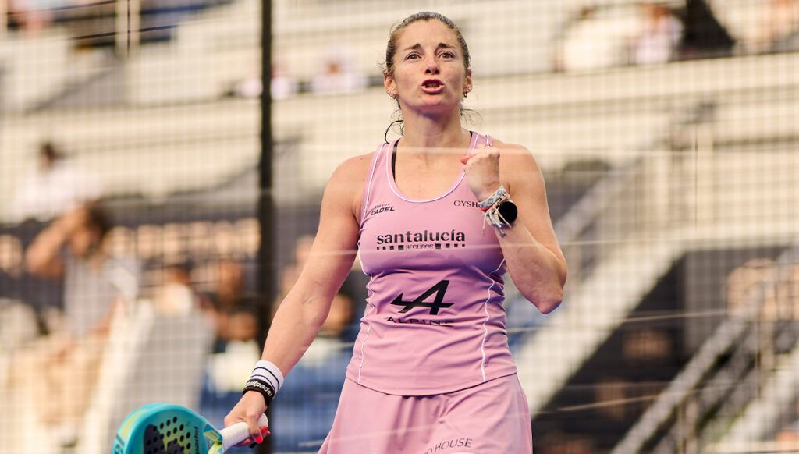

Actualidad · Finals
Ale Salazar se despedirá del pádel profesional en las Finals de Barcelona
La victoria de Gemma Triay y Delfi Brea en Acapulco le da la plaza. Será el último torneo de su carrera. Tino Libaak, que ganó a Javi Leal, también estará.
Por Luis González · · 3 min de lectura

Ale Salazar ya sabe dónde se despide.
En Barcelona.
Anoche, en Acapulco, se confirmó: jugará las Finals del Palau Sant Jordi, del 10 al 13 de diciembre. Será el último torneo de su carrera.
Y no lo decidió ella. Lo decidió Gemma Triay.
Lo esperó desde fuera
El jueves, Salazar perdió en octavos del Major de México. Con Aranza Osoro, ante Bea Caldera y Carmen Goenaga: 6-3 y 6-4.
Desde ahí, ya no dependía de ella.
Si Caldera y Goenaga ganaban anoche en cuartos, entraban en las Finals. Y Salazar se quedaba fuera.
Enfrente tenían a Gemma Triay y Delfi Brea, primeras cabezas de serie.
Ganaron Gemma y Delfi: 6-2, 4-6 y 7-5. Dos horas y 38 minutos.
Gemma, otra vez
Gemma Triay fue su compañera entre 2021 y 2023. Juntas ganaron el Master Final de 2022. En Barcelona.
Hace un mes, Gemma se convirtió en la jugadora con más títulos de la historia. Lleva 59. Salazar, 58.
Anoche, Gemma le abrió la puerta de su último torneo.
Una carrera que acaba en Barcelona
Madrileña. 40 años. Cumple 41 el 31 de diciembre.
Siete veces campeona del mundo con España. Solo Gemma tiene más títulos que ella.
En julio de 2025 anunció que 2026 sería su última temporada. En septiembre, Madrid, su ciudad, la despidió en el último torneo que jugó allí.
Faltaba Barcelona.
Ha estado en las dos Finals que se han jugado. En 2024, con Jessica Castelló, llegó a semifinales. En 2025, con Martina Calvo, a cuartos.
Esta será la tercera. Y la última.
Con ella entra Verónica Virseda. Con las dos, ya se conocen las 16 chicas que jugarán en Barcelona. Aranza Osoro, su compañera en Acapulco, se queda a las puertas.
También Libaak
La otra plaza de anoche se decidió en la pista.
Tino Libaak y Javi Leal llegaban a cuartos separados por dos puntos en la Race. Un partido. Una plaza.
Se la llevó Libaak. Con Gonza Alfonso, ganó a Leal y Fran Guerrero: 7-6 y 7-5, con un 7-1 en el tie-break.
Libaak tiene 21 años. Serán sus primeras Finals. Alfonso, que iba por delante en la Race, también estará.
A Leal, campeón del mundo con España hace tres semanas, se le escapa Barcelona por un partido. Hace un año, en este mismo torneo, fue él quien se quedó con el último billete.

En los chicos aún queda una puerta abierta. Según las cuentas de AnalistasPadel, Jairo Bautista y Lucas Bergamini se meterían si llegan a la final. Esta noche juegan contra Coello y Tapia. Juan Tello y Maxi Arce estarán pendientes.
Esta noche, semifinales
En hora española (aproximada):
- 23:00 · Ari Sánchez y Andrea Ustero contra Paula Josemaría y Bea González.
- 01:00 · Libaak y Alfonso contra Íñigo Jofre y Juanlu Esbrí.
- 02:30 · Gemma Triay y Delfi Brea contra Claudia Fernández y Martina Calvo.
- 04:30 · Coello y Tapia contra Bautista y Bergamini.
Su última pista
Libaak, 21 años, jugará sus primeras Finals.
Ale Salazar, 40, las últimas.
Del 10 al 13 de diciembre. En el Palau Sant Jordi.
Ahí se despide una de las grandes.
— Luis González
Publicidad

Publicidad